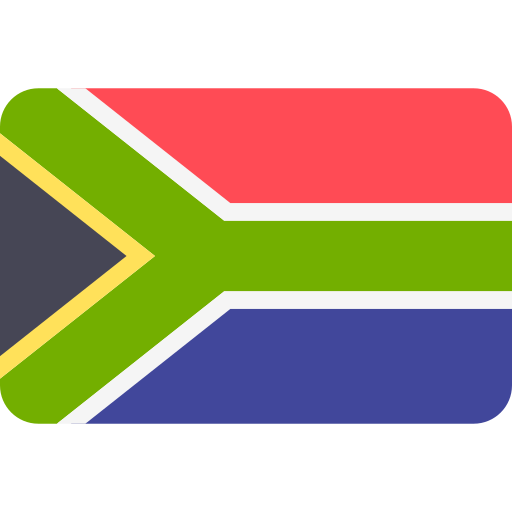

História das Copas do mundo
A ideia da Copa do Mundo de Futebol foi proposta pela primeira vez pelo dirigente esportivo francês Jules Rimet em 1928. A primeira Copa do Mundo foi realizada em 1930 no Uruguai, com 13 equipes participantes. O Uruguai se sagrou campeão ao vencer a Argentina na final.
No entanto, a competição enfrentou dificuldades devido à Segunda Guerra Mundial e não foi realizada em 1942 e 1946. A Copa do Mundo foi retomada em 1950 no Brasil, com o famoso "Maracanazo", quando o Uruguai derrotou o Brasil na final em pleno Maracanã.
A competição continuou a crescer em popularidade e tamanho ao longo dos anos, com mais equipes e regiões participando. Grandes jogadores e momentos icônicos marcaram cada torneio, incluindo a ascensão de Pelé e a "Mão de Deus" de Maradona.
Hoje, a Copa do Mundo é o maior e mais assistido evento esportivo do planeta, ocorrendo a cada quatro anos e reunindo seleções nacionais de todos os continentes para competir pelo título de campeão mundial.
Esses são apenas resumos das ricas histórias do futebol e das Copas do Mundo. Ambos os tópicos têm muitos detalhes fascinantes e eventos importantes que moldaram o esporte e sua popularidade global.
Edições da Copa (até 2022)
- 1930 - Uruguai

- 1934 - Itália

- 1938 - França

- 1950 - Brasil

- 1954 - Suíça

- 1958 - Suécia

- 1962 - Chile

- 1966 - Inglaterra

- 1970 - México

- 1974 - Alemanha Ocidental

- 1978 - Argentina

- 1982 - Espanha

- 1986 - México
- 1990 - Itália
- 1994 - Estados Unidos

- 1998 - França
- 2002 - Coreia do Sul e Japão
 /
/ 
- 2006 - Alemanha
- 2010 - África do sul 
- 2014 - Brasil
- 2018 - Rússia

- 2022 - Catar